ONews

El nuevo rey de los juegos continúa la legendaria línea de sangre de AORUS con la más robusta transmisión de energía, un diseño térmico dominante y una completa tecnología de overclocking de memoria para coronar tu PC con el mejor rendimiento de Alder Lake en todo su esplendor para los juegos.

Toda la línea AORUS Z690 presenta más
de 16 fases de potencia directa.
El buque insignia Z690 AORUS XTREME encabeza la competencia con un diseño de potencia de 20+1+2 fases de última generación, capaz de satisfacer la demanda de potencia requerida por el i9-12900K de 12.ª generación en las condiciones más extremas, como los juegos premium. , creación de contenido o overclocking extremo.
Poder extremo al núcleo. Todo el diseño de energía directa.
Eficiencia energética superior.
Temperaturas VRM más bajas.
Libere todo el potencial de los procesadores de 12.ª generación.
Overclocking DDR5 hecho fácil.
Aumente su memoria DDR5 con solo un clic.
Amplificador automático DDR5
La forma más fácil de overclockear tu DDR5.
Aumento de 4800 MHz a 5000 MHz
Extremo Fresco y Estable. VRM < 65°C bajo cargas completas
No solo el hambre de energía del procesador, sino que el calor del VRM también podría convertirse en un castigo grave para la placa base. Desde 2019, AORUS ha liderado la industria con un módulo de aletas térmicas exclusivo para la disipación de calor en el VRM, que promete una capacidad térmica excesiva. AORUS no se detuvo allí, sino que también actualizó las térmicas VRM con Fins-Array III , lo que garantiza una temperatura VRM 65°C bajo cargas completas y garantiza una plataforma más estable para juegos premium, creación de contenido o incluso overclocking extremo.
MONITORES GIGABYTE AORUS 4K
Presentamos los PRIMEROS monitores para juegos 4K de AORUS: FI32U, FV43U y FO48U. Estos modelos cuentan con hasta 4K/120+, HDMI 2.1, Super Speed IPS, HDR 1000, panel OLED y AORUS Space Audio. Todo esto hace que los nuevos monitores AORUS 4K sean la combinación perfecta para su PC de juegos premium o consola de última generación.
Imagen nítida
Más píxeles, más inmersivo. La nueva línea de monitores para juegos AORUS ahora implementa una resolución 4K, brindando una imagen excepcional y detallada para una experiencia de juego más inmersiva.
Lo mejor para juegos
Juegos fluidos y limpios. La nueva línea de monitores AORUS 4K se rearma con una frecuencia de actualización de más de 120 Hz y un tiempo de respuesta de 1 ms, lo que promete un juego fluido y sin interrupciones. Para el FI32U, podría esperar un tiempo de respuesta más corto de 0,5 ms, ¡gracias a la avanzada tecnología Super Speed IPS!
Diseñado para el futuro
Cuanto mayor sea el ancho de banda, más inmersivo será el juego. Estos nuevos monitores AORUS 4K ahora vienen todos equipados con HDMI 2.1. HDMI 2.1 puede proporcionar un enorme ancho de banda de 48 Gbps, lo que le permite maximizar su configuración de juego en cualquier PC para juegos o consola de última generación.